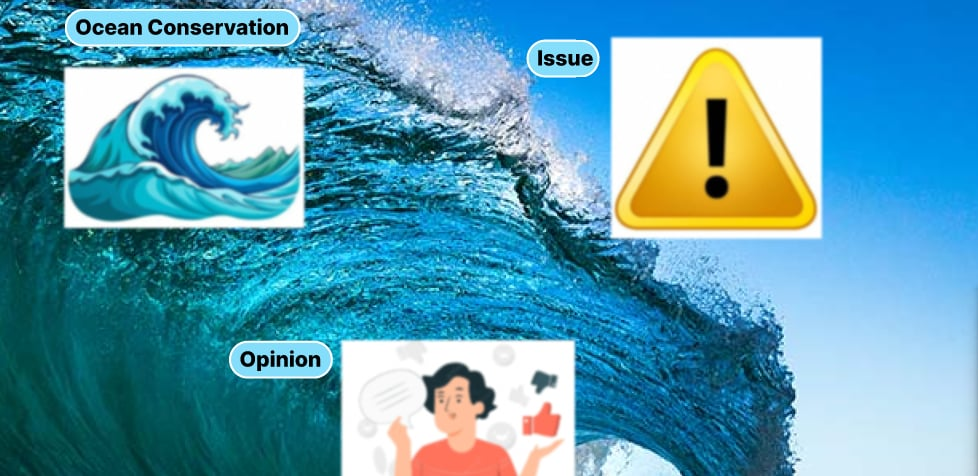
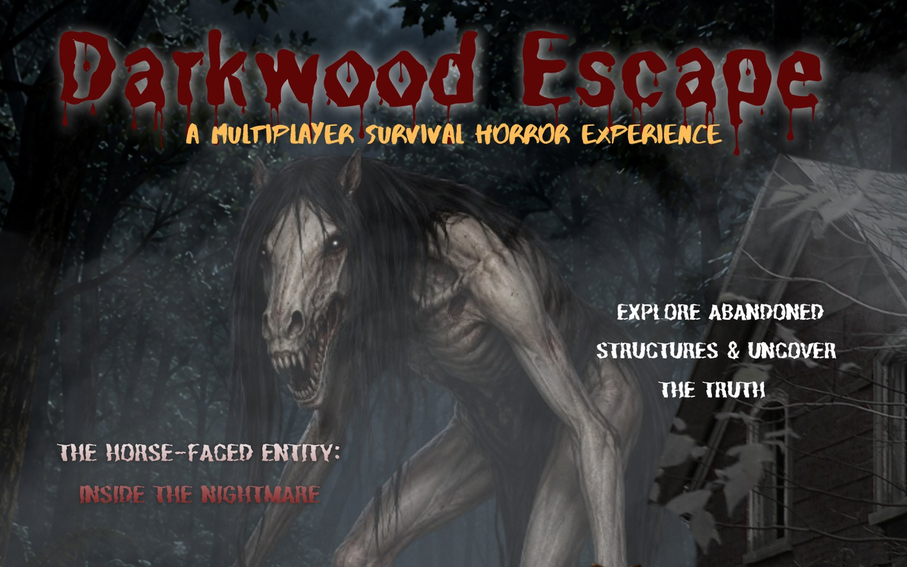

Available for Opportunities / 4th Year BSIT Student
Petal C. Peñaloza
I'm an IT student learning web development and how apps are planned and designed. I enjoy turning ideas into simple, working systems, and I'm looking for chances to keep learning by building.
Web & UI/UX Focus
About Me
I am Petal C. Peñaloza, an Information Technology student at Cebu Eastern College Inc., currently in my 4th year of the BSIT program. My interest in technology comes from its ability to solve practical problems and improve how people work and live.
I am developing skills in planning, problem solving, and working with others. I value clear communication and learning from feedback, and I try to apply both in every activity.
My goal is to gain practical experience in web development and system design and to keep improving my technical skills. I welcome opportunities to learn, collaborate, and contribute.
Focusing on front-end development, responsive layouts, and user-centered system workflows.
Key domains I am actively exploring and applying in my studies:
Skills & Proficiencies
Honest self-assessed levels based on coursework, personal coding, and continuous practice. No exaggerated percentage bars.
HTML
Structuring semantic content, accessible web layouts, and clean hierarchy for modern browsers.
CSS
Responsive styling with Flexbox, Grid, utility-first patterns, and fluid mobile-first layouts.
JavaScript
DOM manipulation, asynchronous fetching, event logic, and core programming fundamentals.
Databases
Understanding relational structures, basic SQL schema creation, querying, and data persistence.
UI/UX Design
Wireframing, spacing systems, interface ergonomics, typography selection, and readability.
Teamwork
Active listening, iterative feedback integration, academic group collaboration, and reliable execution.
Featured Projects
Academic assignments, interface experiments, and exploratory projects. Structured with room to add future projects easily.

UI/UX Design Practice
Practice project exploring UI/UX design: creating clear, readable, intuitive screen layouts with fluid user hierarchies.
Planned layouts, selected typography & color tokens, and iteratively revised based on feedback.
SigaRuta
Streetlight Failure Detection & Tracking
AI app & dashboard for Tisa, Cebu City using YOLOv8-Nano to detect streetlight failures, log GPS geotags, and support LGU verification.
Report Verification & Management Module Owner — QA, report review, flagging invalid entries, status updates.

Darkwood Escape
Roblox Horror Survival Game
2-6 player co-op survival horror game in Roblox Studio (Lua). Players solve puzzles, gather items, and evade AI patrol enemies to escape.
QA Tester & Documentation — gameplay testing, bug logging, inventory & AI validation, and technical reports.
Currently preparing web development repositories and capstone prototypes for display.
Get In Touch
I am eager to hear feedback, explore internship opportunities, or discuss collaborations in web development and UI/UX design.